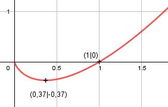

Aufgabe 164 f(x) = x * ln x Produktregel erste Ableitung: u = x, u' = 1 1 v = ln x, v' = --- x 1 f'(x) = 1 * ln x + --- * x = ln x + 1 x Zweite Ableitung: 1 f''(x) = --- = x-1 x Dritte Ableitung: 2 f'''(x) = - 1 * x-2 = - ---- ≠ 0 für x ≠ 0 x² Wegen ln x, muss x > 0 sein Definitionsbereich: 0 < x < ∞ Wertebereich: f(x) ist dann am kleinsten, wenn x = 0,37 (Extrempunkt) und f(0,37) = -0,37 --> -0,37 ≤ f(x) < ∞ Symmetrie zur y-Achse bzw. zum Punkt (0|0): f(-x) = -x * ln (-x) ≠ f(x) --> keine Achsensymmetrie -f(-x) = x * ln (-x) ≠ f(x) --> keine Punktsymmetrie Nullstellen: f(x) = 0 x * ln x = 0 x1 = 0 liegt nicht im Definitionsbereich --> keine Nullstelle ln x = 0 x2> = e0 = 1 N(1|0) Schnittpunkt mit der y-Achse: x = 0 liegt nicht im Definitionsbereich --> kein Schnittpunkt Extrempunkte: f'(x) = 0 ln x + 1 = 0 |-1 ln x = -1 x = e-1 = 0,37 f(0,37) = 0,37 * ln e-1 = -0,37 1 f''(0,37) = ------ > 0 0,37 --> Tiefpunkt (0,37|-0,37) Wendepunkte: f''(x) = 0 1 --- = 0 |*x x 1 = 0 Widerspruch --> keine Wendepunkte Graph:
